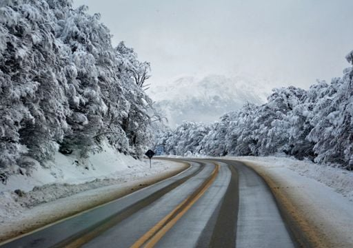
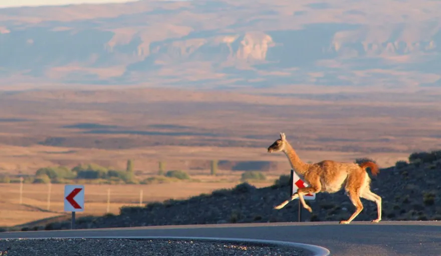
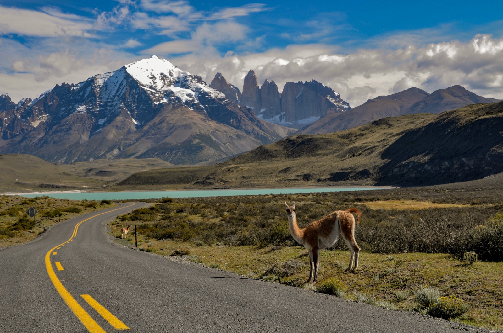

¿De qué se trata?
En varios tramos de la Ruta Nacional 3, la fauna silvestre —como guanacos y choiques— suele cruzar la vía, generando accidentes viales graves. Actualmente, las señales de advertencia clásicas permanecen encendidas o fijas sin adaptarse a las condiciones reales del entorno, por lo que los conductores ignoran cuándo hay un riesgo efectivo.


El Desafío
Proyectar una señalización vial inteligente que reconozca la presencia y/o cercanía de fauna en la ruta, para que el vehiculo frene y deje pasar el animal.
¿Por qué es importante?
- Reduce los accidentes: Avisa a tiempo a los conductores, incentivando una reducción de velocidad efectiva.
- Protege la fauna silvestre: Menos colisiones significan menos animales muertos y mayor protección para guanacos y choiques.
- Seguridad para las personas: Disminuye los daños materiales en vehículos y previene lesiones o pérdidas humanas.
- Eficiente en energía: Funciona solo cuando se necesita, facilitando el uso de energía sustentable a través de paneles solares y baterías.

Impacto Ambiental y Conservación
- La UNESCO no solo destaca la fauna marina de la Península Valdés, sino que decide que la riqueza ecológica de su estepa es motivo suficiente para declararla Sitio de Patrimonio Mundial.
- Especies clave amenazadas: El guanaco (Lama guanicoe) es el herbívoro nativo más afectado. Deambulan en manadas en busca de agua o pastizales, se atraviesan a gran velocidad por la Ruta 3 y, en el proceso, incrementan la amenaza de que se produzca una matanza masiva de animales atropellados.
- Efecto barrera Las rutas señalizadas sin señalización inteligente, son una barrera invisible, que conduce a la fragmentación de los hábitats, a la perturbación de las migraciones naturales
Impacto positivo inmediato en la comunidad y el turismo
- Menores gastos de emergencia:Porque el Estado y las compañías de seguros gastan menos dinero en asistencia médica, servicios de grúa y daños en las carreteras causados por accidentes.
- Protección turística: La Ruta 3 marca el acceso a uno de los sitios turísticos internacionales más significativos de la Patagonia. La seguridad vial ayuda a proteger a los turistas que no están familiarizados con la dinámica local de la fauna.
- Sustentabilidad energética:Las estaciones de señalización funcionan con paneles solares y baterías de litio de alta durabilidad, lo que permite que operen 24/7 pero de manera completamente autónoma y sostenible.
Enlaces y Sitios Oficiales
Conoce más sobre la región y las iniciativas viales: